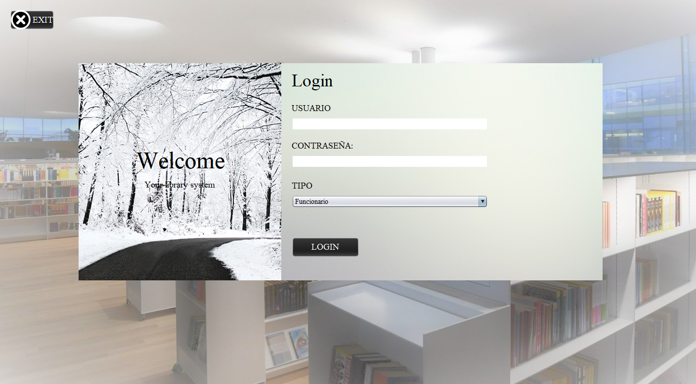

Disponible próximamente. Te informaremos cuando esté listo. Clic aquí.
SISTEMA BILBIOTECARIO.
Prototipo para el registro y control de préstamo de materiales bibliográficos en la
biblioteca de la F.U.C.I

Fucci library.
La importancia de este proyecto se centra en los usuarios de la biblioteca y los
funcionarios
de esta realicen un satisfactorio uso del lugar, haciendo que cada préstamo generado
produzca
un sentimiento de satisfacción en cada cual, sabiendo que se ha realizado un proceso de
manera completa como lo determina la biblioteca y de una manera rápida haciendo participes
a todos en este sistema.
¿Cómo mejorar el proceso del préstamo de materiales bibliográficos en la biblioteca de la F.U.C.I?
~Formulación del problema.
Disponible próximamente.
Regístrate para recibir más información sobre FUCI Libray.